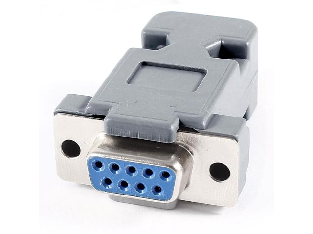
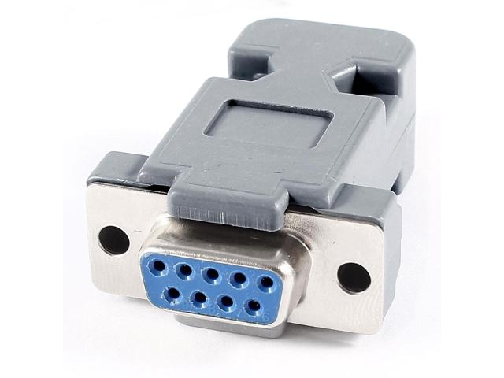
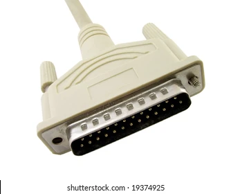
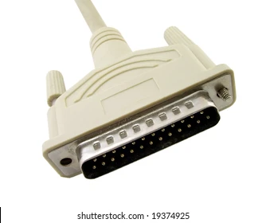
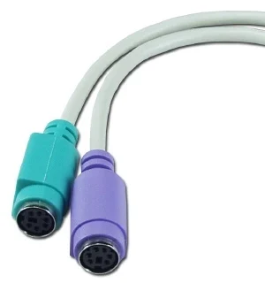
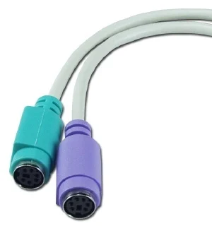

USB-A Port & Connector
USB-A (Universal Serial Bus) is used to connect various devices such as keyboards, mice, and external drives to a computer.
It is commonly used to connect computers, monitors, TVs, and projectors.
HDMI supports HD, Full HD, 4K and even 8K resolution depending on the HDMI version.
It provides clear output with no signal loss, making it the most popular display interface.
 

 



 
